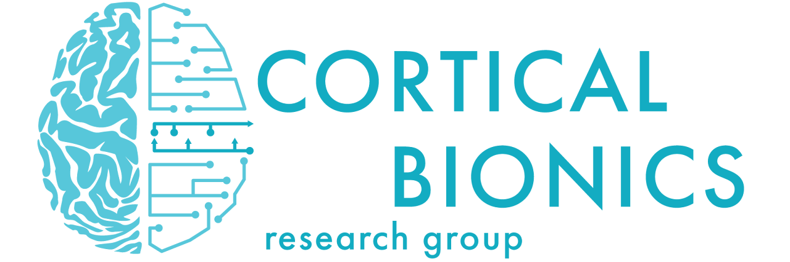

Bio
I am a fourth-year undergraduate student at the University of Chicago, majoring in Computer Science and Neuroscience.
My research experience focuses on the application of machine learning in brain-computer interface (BCI). Specifically, I have worked on projects involving both noninvasive (EEG) and invasive (Utah array implants) BCI systems. I have experience in signal processing, feature extraction, and classification algorithms to improve the accuracy and efficiency of BCI systems.
My interests lie in the interaction between artificial intelligence and human cognition, particularly in how machine learning techniques can be leveraged to enhance brain-computer interfaces and neuroprosthetics. I am passionate about exploring innovative solutions that bridge the gap between technology and neuroscience, ultimately aiming to contribute to advancements in human-computer interaction. Specifically, LLM agents are of great interest to me, as I believe they hold the potential to revolutionize the way we interact with machines and augment human capabilities.
Research Groups
Research Experience
Research Assistant
June 2024 -- Present- Engineered and prototyped an 8-channel force-sensing data acquisition system using Arduino and custom PCB designs in KiCad.
- Developed a Python-based data pipeline to process over 20 GB of time-series data per session, managing sensor calibration, real-time data streaming (RTMA), and video-based object location analysis with OpenCV.
- Trained and evaluated predictive models (PCA, LDA, Reinforcement Learning) to decode grasp force from primary motor cortex signals, establishing a time-dependent relationship between neural activity and behavior.
- Managed 11 human-subject Brain-Computer Interface (BCI) sessions with 2 patients, adhering to IRB protocols and CITI training standards.
Research Assistant
September 2023 -- May 2024- Implemented an extension to a Neuro Evolution of Augmenting Topologies (NEAT) program by incorporating Compositional Pattern-Producing Networks (CPPN), altering the evolutionary generation of images.
- Analyzed Electroencephalogram (EEG) signals using Brain Electrical Source Analysis (BESA) and Minimum Norm Estimates (MNE) Python libraries.
- Assisted in conducting human-subject behavioral experiments, contributing to data collection and lab protocols.
Presentations
- Chen, Z. & Sobinov, A., (2025, November 13). Encoding of grasp force in human motor cortex during object transport [Paper presentation]. Society for Neuroscience 2025, San Diego, CA, United States.
- Chen, Z., (2025, April 25). Exploring missing grasp force signals in motor cortex during object transport [Poster session]. University of Chicago QUAD Undergraduate Research Symposium, Chicago, IL, United States.[Poster]
- Chen, Z., (2024, August 13). Decoding grasp force in the M1 during object transportation [Paper presentation]. Jeff Metcalf's Research Fellowship Presentation, Chicago, IL, United States.[Slides]
Teaching Experience
Grader, Introduction to Computer Science
January 2024 -- June 2025- Evaluated Python assignments for 20-25 students weekly, providing targeted feedback on programming logic, style, and software development best practices.
- Collaborated with faculty and TAs to refine grading rubrics and enhance course materials based on analysis of student performance trends.
Awards & Honors
Phi Beta Kappa Academic Honor Society
May 2025
Enrico Fermi Scholars in the Physical Sciences Collegiate Division
Top 5% of cohorts in the last 5 years
May 2025
Janet Rowley Scholars in the Biological Sciences Collegiate Division
Top 5% of cohorts in the last 5 years
May 2025
University of Chicago QUAD Research Scholarship
January 2025
Robert Maynard Hutchins Scholar
Top 10% of cohorts
August 2024
Jeff Metcalf's Neuroscience Research Fellowship
June 2024
Materials
Please find below some of the materials related to my work:
Writing sample (Neuroscience final essay)
Contact
If you would like to get in touch with me, please feel free to reach out via email. I am always open to discussing potential research opportunities, collaborations, or any questions you may have.